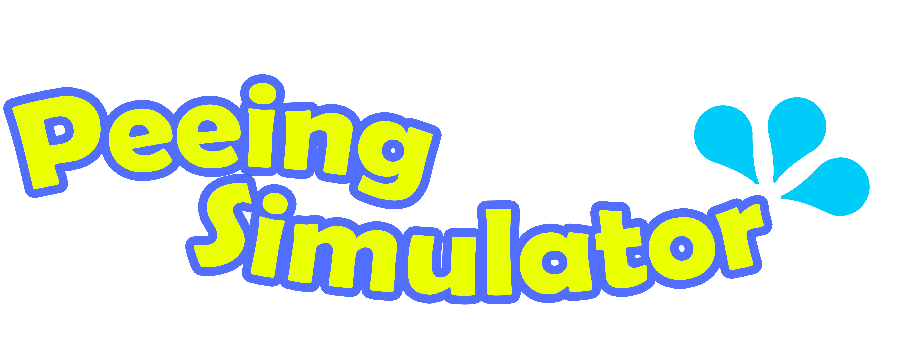
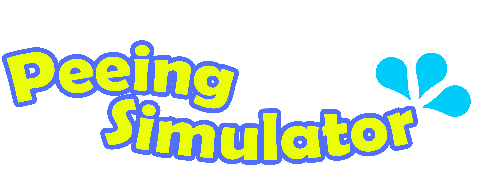

This is exactly what it seems, a peeing simulator. Nothing too special but just something to play around with. A quick side project me and Jude Parzybok. Some of the things we encountered while making this project were very, very frustrating and we had to perservere through a lot.
When making the pee bar, we struggled for a bit to get it to increase slowly and at a consistent rate, although we did persearvare. The way we did it can be found on the GitHub of the website. Another thing we struggled with was making the colors at the buttom be interactive. I hope you have fun playing around with this!
If you have any ideas about how to make it more advanced, or ideas to add, contact me and let me know! I would be very happy to incorporate your ideas in, as we are looking for more ways to make it better.
 
